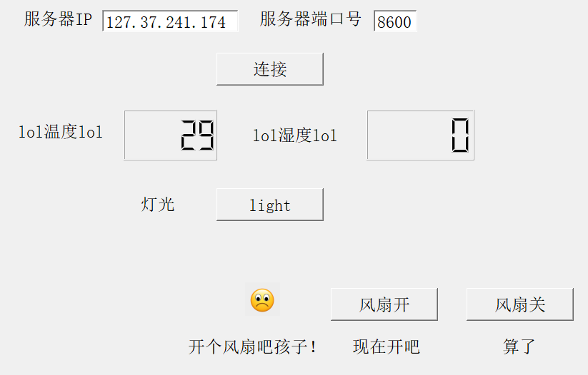

物联网学习记录
本系列记录物联网从基础到实践的学习过程，包含概念、协议、开发案例等内容，持续更新~
第一章：物联网基础概念
1.1 物联网定义与核心特征
物联网（Internet of Things, IoT）是指通过信息传感设备，将任何物品与互联网相连接，进行信息交换和通信，以实现智能化识别、定位、跟踪、监控和管理的一种网络。
核心特征：**万物互联**、**数据驱动**、**智能交互**。

1.2 典型架构（感知层/网络层/应用层）
物联网标准架构分为三层：
- 感知层：负责数据采集（传感器、RFID、二维码等）
- 网络层：负责数据传输（有线/无线通信网络）
- 应用层：负责数据处理与业务呈现（云平台、APP、Web等）
第二章：通信协议与网络
2.1 短距离通信（WiFi/Bluetooth/Zigbee）
短距离通信技术适用于室内/小范围设备互联，不同协议的适用场景不同：

WiFi：带宽高、功耗高，适用于家庭智能设备；Bluetooth：低功耗、短距，适用于可穿戴设备；Zigbee：低功耗、自组网，适用于工业传感器网络。
2.2 广域网通信（NB-IoT/LoRa/5G）
广域网通信技术解决远距离设备联网问题，是物联网规模化部署的核心：
- NB-IoT：运营商网络，低功耗、广覆盖，适用于智能水表/电表
- LoRa：非授权频段，自组网，适用于偏远地区物联网
- 5G：高速率、低时延，适用于自动驾驶、工业控制等场景
第三章：嵌入式开发与实践
3.1 开发板选型（STM32/ESP32）
嵌入式开发是物联网感知层的核心，主流开发板各有优劣，需根据项目需求选型：
- STM32：性能稳定、外设丰富，适用于工业级、高精度需求项目
- ESP32：内置WiFi/Bluetooth，开发便捷，适用于民用、低成本智能设备

3.2 传感器数据采集与上传
传感器数据采集的核心流程为：传感器感知环境数据 → 开发板读取数据 → 协议封装 → 上传至网关/云端。
常用传感器：DHT11（温湿度）、BH1750（光照）、HC-SR04（超声波测距）。
第四章：智能家居项目实战
4.1 项目概况与目标
依托物联网与AI技术发展趋势，聚焦家居环境智能化，旨在通过技术手段提升生活便捷性、舒适性与安全性。
核心目标：构建基于ZigBee与TCP/IP协议的智能家居系统，实现温湿度/光照等环境参数实时采集监控、灯光/窗帘等设备远程智能控制，以及数据上云与可视化展示、历史数据查询。

4.2 软硬件环境支撑
开发环境与工具链：以Windows 11为宿主系统，通过VMware Workstation Pro 17虚拟化RedHat 5、Ubuntu 16/18系统；代码编写用VSCode/Vim，编译用GCC/ARM-Linux-GCC，调试与传输用Putty/SecureCRT、WinSCP。
核心硬件：中软物联网实验箱（CC2530传感器节点、ARM/Linux智能网关）。
软件平台：新大陆物联网云平台，支持设备全生命周期管理、数据存储与可视化、远程指令下发。

4.3 系统设计与成果
总体架构采用四层架构：感知层、网络层、平台层、应用层。
核心成果：网关程序多线程并发架构稳定运行，PC客户端能实时展示UDP广播数据，云平台成功接收上传数据并生成温湿度变化曲线，支持历史数据查询。
4.4 总结与未来展望
项目成功搭建基于中软物联网实验箱与新大陆云平台的智能家居系统，实现全部核心功能，系统运行稳定。技术收获：掌握物联网系统全流程设计与开发、C语言QT编程、UDP/TCP网络编程、嵌入式Linux环境搭建等。
未来展望：兼容更多智能设备、开发移动App、引入AI算法实现自动化控制、强化数据安全、增加边缘计算能力。